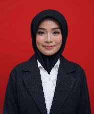

Annisa Fadilah Azhar, S.T.
Lulusan Teknik Lingkungan Universitas Andalas (IPK 3.56 - Cum Laude) dengan pengalaman profesional di bidang Project Support pada PT Bina Lestari Lingkungan Sejahtera (Management Consultant Air Bersih Jakarta / SPAM Jatiluhur Hilir) dan sebelumnya sebagai Process Engineer di PT Malaya Artha Nusa. Berpengalaman dalam pengelolaan dokumen proyek tender, konstruksi, hingga serah terima (BAST), verifikasi teknis, pengolahan air bersih & air limbah, serta kepatuhan lingkungan. Memiliki sertifikasi resmi Ahli K3 Umum (AK3U Kemnaker) dengan kemampuan komunikasi, analisis, dan kedisiplinan yang tinggi.

Pengalaman Kerja
Rekam jejak profesional dalam pengawasan proyek infrastruktur air bersih, rekayasa proses, dan manajemen dokumen teknis.
Project Support
- Memantau dan memelihara dokumentasi proyek Air Bersih Jakarta (ABJ), termasuk verifikasi keaslian dokumen fisik dan ketersediaan salinan digital (*soft-copy*) pada Tigres (Sharing Folder).
- Mengelola dokumentasi proyek SPAM Jatiluhur Hilir dari tahap tender, fase konstruksi, hingga penyerahan proyek (*Project Handover* / Berita Acara Serah Terima/BAST), termasuk seluruh kelengkapan administrasi.
- Mengatur, memelihara, dan menindaklanjuti arsip dokumen proyek sepanjang siklus hidup proyek, mulai dari Pre-Construction Meeting (PCM) hingga Mutual Check 100 (MC 100) pada SPAM Jatiluhur Hilir.
- Berkolaborasi intensif dengan Tim TaskForce untuk mempercepat validasi dokumen dan memastikan kesiapan dokumentasi ABJ sebelum diserahkan secara resmi ke PAM Jaya.
- Berkoordinasi lintas tim data administrasi dan teknis (Project Leader, Project Engineer, dan Project Control) dalam mengumpulkan, memperbarui, dan menyelesaikan dokumen proyek yang berstatus *outstanding*.
- Menyusun laporan koordinasi dokumentasi berkala antara tim Management Consultant (MK) dan kontraktor pelaksana.
Process Engineer
- Merancang tangki, *vessels*, dan reaktor proses kimia/lingkungan sesuai dengan spesifikasi dan kebutuhan pelanggan (*customer requirements*).
- Melakukan kalkulasi teknik untuk menentukan tekanan desain (*design pressure*) dan tekanan operasi (*operating pressure*) pada tangki, *vessels*, dan reaktor.
- Mengevaluasi performa sistem agitator/pengaduk dan menerapkan peningkatan teknis sesuai standar desain dan operasional.
- Mengembangkan *piping layout* dan menyusun gambar isometrik (*isometric drawings*) sistem perpipaan.
Staff Administrasi & Kesehatan Lingkungan (Magang)
- Menguji kontaminan efluen air limbah dan mengevaluasi kepatuhan unit pengolahan terhadap baku mutu lingkungan hidup.
- Mengevaluasi desain efisiensi unit pengolahan lumpur tinja mulai dari *bar screen* hingga kolam maturasi (*maturation pond*).
- Menyusun draf SOP (*Standard Operating Procedure*) operasional pembuangan dan penanganan lumpur tinja.
- Menyerahkan laporan komprehensif berisi rekomendasi teknis perbaikan operasional fasilitas IPLT.
Pengalaman Asisten Dosen & Laboratorium (2021 – 2023)
Membimbing mahasiswa, menyusun materi laboratorium, serta melatih aplikasi rekayasa lingkungan (AutoCAD, ArcGIS, EPANET).
Pendidikan Formal & Riset
Pondasi keilmuan teknik lingkungan dan kontribusi riset ilmiah di bidang pengolahan air & mikrobiologi.
Universitas Andalas – Padang, Indonesia
- “Recovery of Ammonium and Phosphate from Tofu Wastewater as Fertilizer Using Partial Nitrification Anammox and Struvite Precipitation” (2023)
- “Nitrogen Removal Performance Using Anammox Bacteria from Talago Koto Baru in Membrane Bioreactor (MBR)” (2022)
Sertifikasi & Pelatihan K3 / ISO
Sertifikasi kompetensi resmi Kementerian Ketenagakerjaan RI dan pelatihan standar internasional.
Keahlian & Perangkat Lunak
Kombinasi keahlian teknis rekayasa lingkungan, audit K3, penguasaan software engineering, dan kepemimpinan.
⚙️ Hard Skills & Rekayasa
💻 Software, Bahasa & Soft Skills
Informasi Kontak Langsung
Tersedia untuk peluang kerja penuh waktu, konsultan proyek, maupun diskusi profesional terkait rekayasa lingkungan dan K3.
Unduh Berkas Lengkap
Anda dapat langsung mengunduh Curriculum Vitae (CV) format PDF resmi atau memeriksa keabsahan seluruh sertifikasi K3 & ISO pada tautan penyimpanan Google Drive.